Candidate List 20260429 Previous Day Next Day Section 1: New Sources (age<1d) Cosmological Afterglow
Section 2: Old (1-5d) sources observed last night placeholder
Section 1: New Afterglow/FBOT Cands Last Night (1)
1. ZTF26aaulmvu (Afterglow?FBOT?) [Back to Top] [Share] [Trigger Swift] [Fritz ] [Lasair ]RA, Dec: 159.68049, 33.13996 10h38m43.32s, 33d 8m23.86sGalactic (l, b): 192.91036, 60.80957 ext(g-r) = 0.024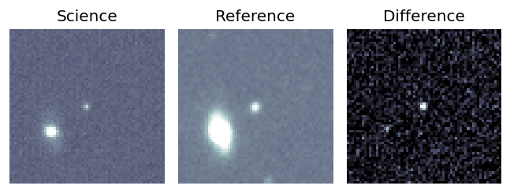
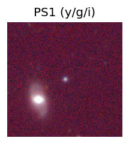
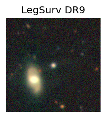
peak abs mag = -19.61 LegacySurvey: 1 sources in 3 arcsec Closest: d = 0.39 arcsec, 205.5 deg (east of north) photoz=0.1 (68% bounds 0.06, 0.14), type=REX peak abs mag = -19.13 (68% bounds -17.85, -19.98) 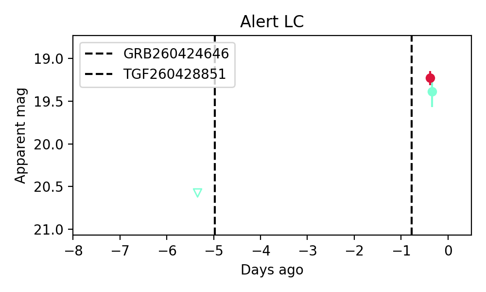
Consistent with synchrotron, g-r>0!
Section 2: Older Sources Observed Last Night (8)
0. ZTF26aatwqsc (Afterglow?FBOT?) [Back to Top] [Share] [Trigger Swift] [Fritz ] [Lasair ]RA, Dec: 217.7016, 26.39787 14h30m48.39s, 26d23m52.34sGalactic (l, b): 36.73971, 67.84303 ext(g-r) = 0.02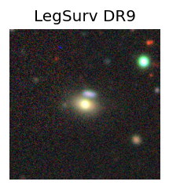
peak abs mag = -19.41 LegacySurvey: 1 sources in 3 arcsec Closest: d = 0.23 arcsec, 222.4 deg (east of north) photoz=0.11 (68% bounds 0.1, 0.12), type=SER peak abs mag = -19.59 (68% bounds -19.37, -19.7)
1. ZTF26aatzrft (Afterglow?) [Back to Top] [Share] [Trigger Swift] [Fritz ] [Lasair ]RA, Dec: 163.1522, 22.93168 10h52m36.53s, 22d55m54.04sGalactic (l, b): 215.18846, 62.82187 ext(g-r) = 0.02LegacySurvey: 1 sources in 3 arcsec Closest: d = 6.46 arcsec, 4.9 deg (east of north) photoz=0.01 (68% bounds 0.01, 0.02), type=PSF peak abs mag = -16.75 (68% bounds -15.62, -18.01) Consistent with synchrotron, g-r>0!
2. ZTF26aauiwxl (FBOT?) [Back to Top] [Share] [Trigger Swift] [Fritz ] [Lasair ]RA, Dec: 254.48345, -1.73815 16h57m56.03s, -1d-44m-17.33sGalactic (l, b): 17.44927, 24.1387 ext(g-r) = 0.261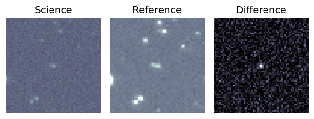
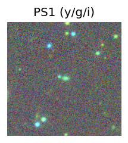
PS1: 1 source in 3 arcsec Closest: d = 0.56 arcsec photoz=0.24+/-0.03 peak abs mag = -21.45 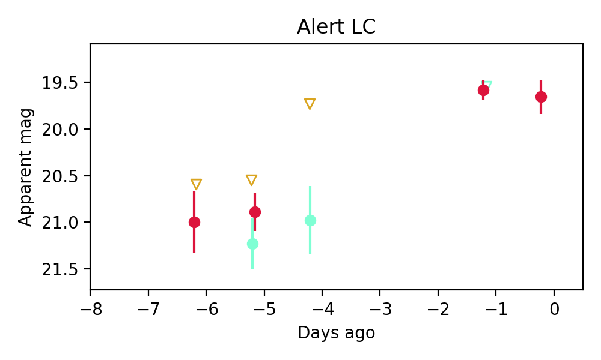
3. ZTF26aaukwtl (FBOT?) [Back to Top] [Share] [Trigger Swift] [Fritz ] [Lasair ]RA, Dec: 155.78715, 15.40651 10h23m8.92s, 15d24m23.42sGalactic (l, b): 224.05908, 53.67997 WARNING: 4.96 deg from ecliptic plane ext(g-r) = 0.05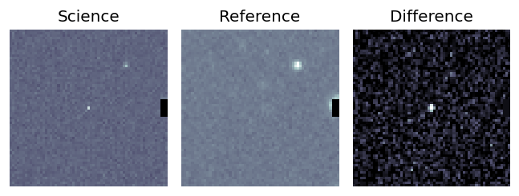
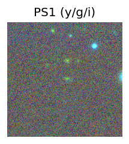
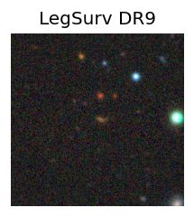
peak abs mag = -22.73 LegacySurvey: 1 sources in 3 arcsec Closest: d = 1.42 arcsec, 266.4 deg (east of north) photoz=0.52 (68% bounds 0.44, 0.58), type=EXP peak abs mag = -23.32 (68% bounds -22.88, -23.61) 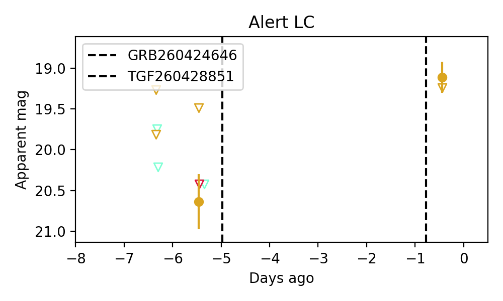
4. ZTF26aaulhci (FBOT?) [Back to Top] [Share] [Trigger Swift] [Fritz ] [Lasair ]RA, Dec: 153.06439, 9.28252 10h12m15.45s, 9d16m57.07sGalactic (l, b): 230.68257, 48.45274 WARNING: -1.71 deg from ecliptic plane ext(g-r) = 0.033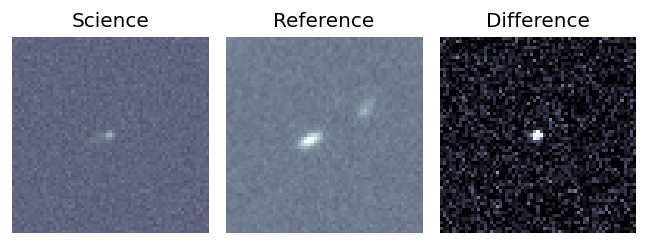
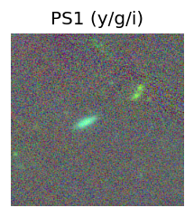
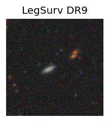
peak abs mag = -20.25 LegacySurvey: 1 sources in 3 arcsec Closest: d = 3.60 arcsec, 46.7 deg (east of north) photoz=0.47 (68% bounds 0.38, 0.65), type=PSF peak abs mag = -23.59 (68% bounds -23.01, -24.44) 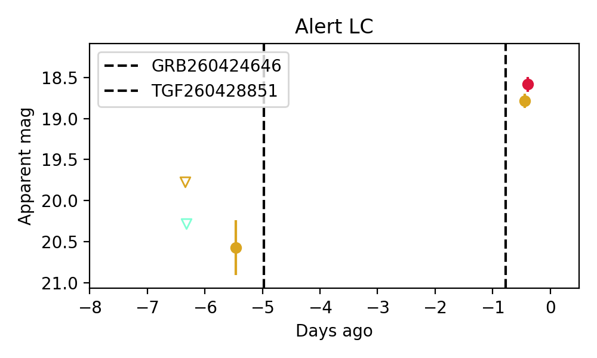
5. ZTF26aaumolp (Afterglow?) [Back to Top] [Share] [Trigger Swift] [Fritz ] [Lasair ]RA, Dec: 253.19586, 68.0844 16h52m47.01s, 68d 5m3.85sGalactic (l, b): 99.30618, 35.97484 ext(g-r) = 0.041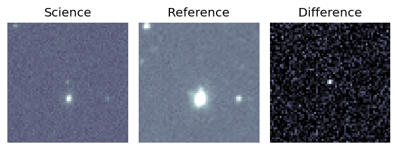
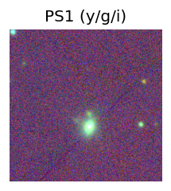
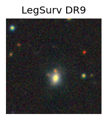
LegacySurvey: 1 sources in 3 arcsec Closest: d = 3.86 arcsec, 198.6 deg (east of north) photoz=0.33 (68% bounds 0.28, 0.37), type=EXP peak abs mag = -21.4 (68% bounds -21.04, -21.72) 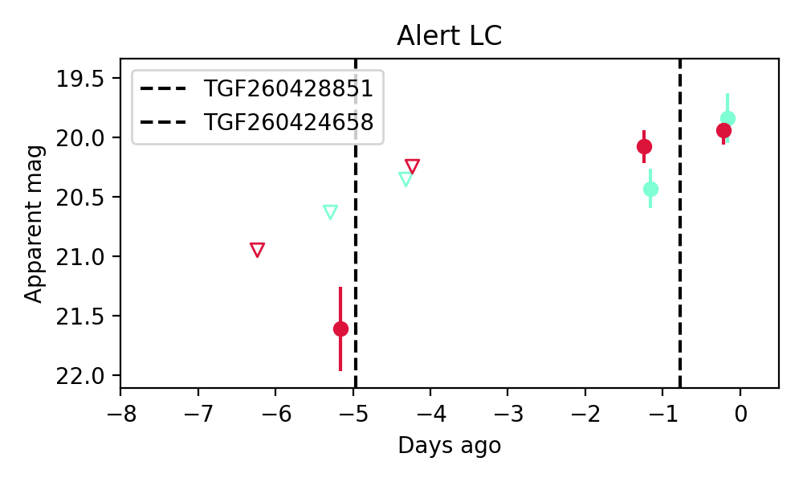
Consistent with synchrotron, g-r>0!
6. ZTF26aaumqot (FBOT?) [Back to Top] [Share] [Trigger Swift] [Fritz ] [Lasair ]RA, Dec: 260.21845, 47.27809 17h20m52.43s, 47d16m41.11sGalactic (l, b): 73.42964, 34.57114 ext(g-r) = 0.028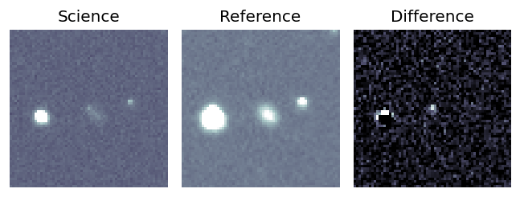
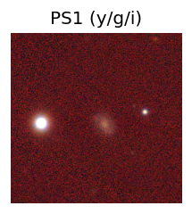
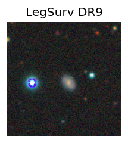
LegacySurvey: 1 sources in 3 arcsec Closest: d = 0.36 arcsec, 139.8 deg (east of north) photoz=0.49 (68% bounds 0.13, 0.94), type=DEV peak abs mag = -22.32 (68% bounds -18.99, -24.04) 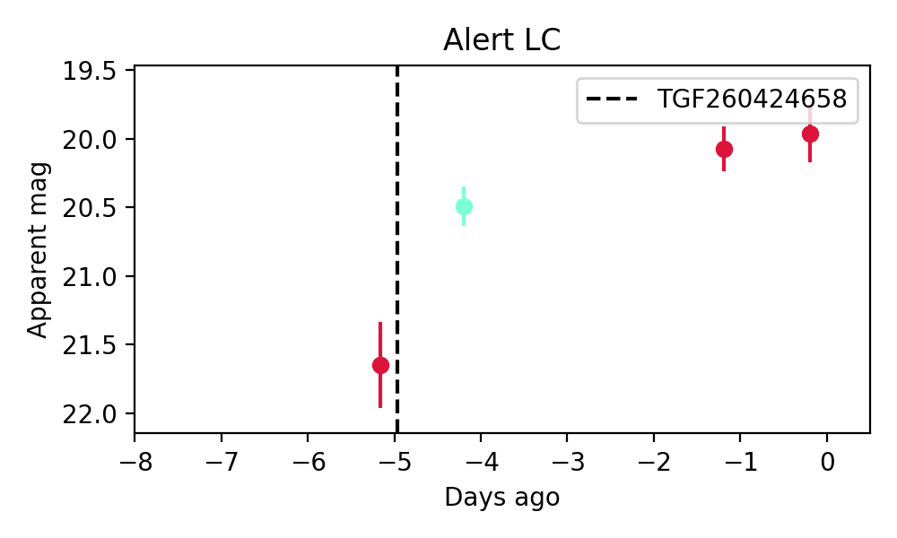
7. ZTF26aaumtdl (FBOT?) [Back to Top] [Share] [Trigger Swift] [Fritz ] [Lasair ]RA, Dec: 242.95677, -12.33424 16h11m49.62s, -12d-20m-3.25sGalactic (l, b): 0.51731, 27.40856 ext(g-r) = 0.309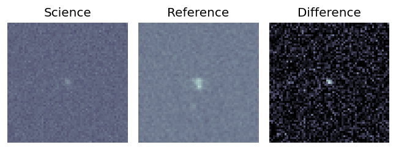
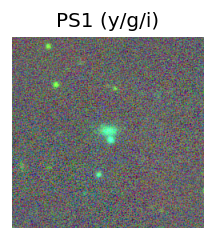
PS1: 1 source in 3 arcsec Closest: d = 0.09 arcsec photoz=0.14+/-0.02 peak abs mag = -20.85 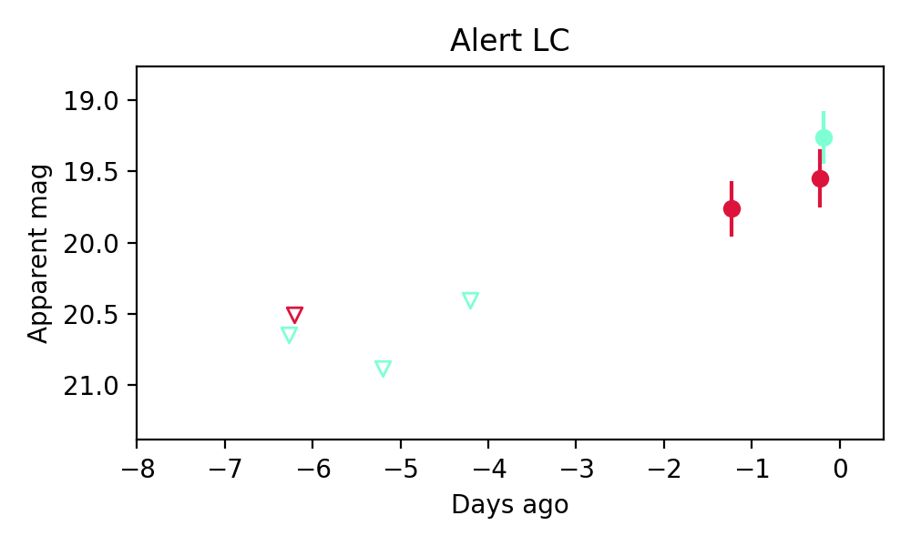